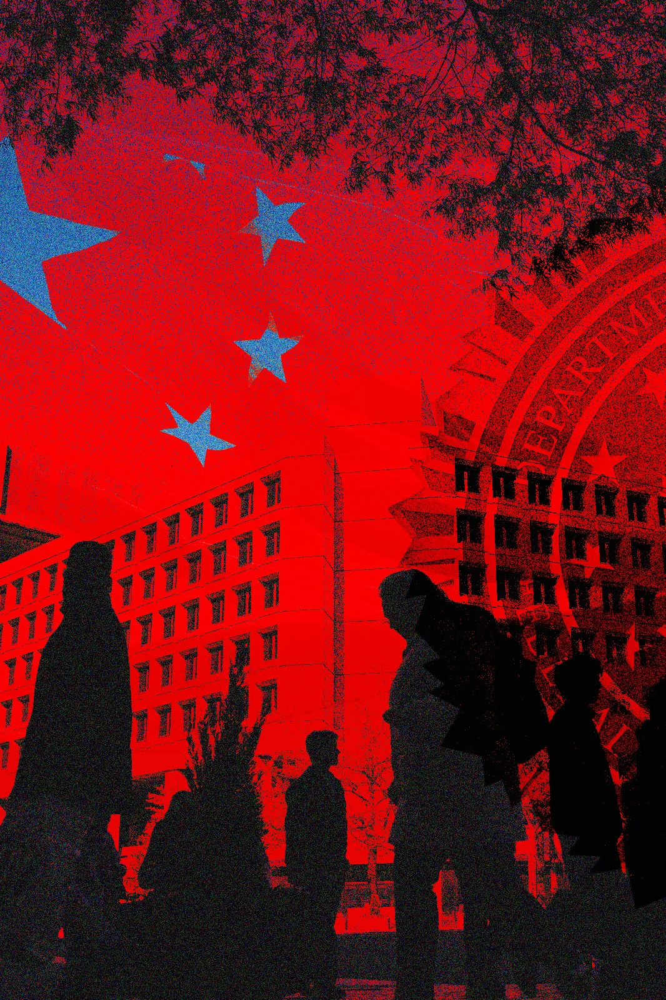

FBI Takes Down Network Accused of Helping Chinese Hackers Target U.S. Systems
National | Cybersecurity
Published: Wednesday, August 26, 2026

Federal authorities have moved to disrupt a sophisticated cyber infrastructure allegedly used by Chinese state-backed hackers to conduct operations against U.S. government agencies, critical infrastructure and major private-sector organizations.
The Justice Department and FBI announced the seizure of internet domains connected to a hacking operation identified as QTFY, along with two platforms known as QScan and QTRouter. Investigators say the services helped cyber operators locate vulnerable internet-connected devices and route their activity through compromised systems and proxy networks.
The alleged operation is significant because investigators say its reach extended across numerous sectors of the U.S. economy and government.
Among the organizations identified as targets were NASA, the Federal Reserve, the U.S. Senate, the Department of Energy, the Department of Justice and the Department of Health and Human Services.
Investigators also identified alleged targeting involving hospitals, universities, telecommunications companies, energy providers, financial institutions and defense contractors.
Authorities cautioned that being identified as a target does not necessarily establish that an organization was successfully compromised.
A Network Built to Hide Hackers
According to federal court documents and information released by investigators, QTFY allegedly operated through infrastructure designed to make cyberattacks more difficult to trace.
The system reportedly incorporated compromised Internet of Things devices and commercial proxy services. Those machines could serve as intermediaries between hackers and their intended targets.

One component, QScan, allegedly helped identify vulnerable connected devices that could potentially be taken over. QTRouter reportedly provided a mechanism for managing access to the resulting network as well as other proxy resources.
The arrangement allowed cyber operators to potentially disguise the true source of their communications.
Instead of connecting directly to a government agency or company, malicious traffic could be routed through computers, routers, servers or other systems belonging to unrelated users.
That type of infrastructure can create significant challenges for investigators because the visible source of an intrusion may be a compromised third-party device rather than the actual attacker.
Investigators Say the Tactics Changed Over Time
The alleged operation reportedly evolved as cybersecurity researchers and law enforcement became more familiar with its infrastructure.
Investigators say operators increasingly exploited VPN networks used by people in China to reach websites and online services outside China’s heavily restricted internet environment.
Routing malicious traffic through those networks could make detection more difficult because the same infrastructure was also carrying legitimate communications.
Researchers working with law enforcement said distinguishing hostile activity from ordinary users became considerably harder when malicious traffic was mixed with normal VPN activity.
Damon Rouse of Lumen Technologies’ Black Lotus Labs described the alleged operation as unusually broad and persistent.
Researchers believe the infrastructure may have supported cyber campaigns going back several years.
Alleged Links to Chinese Government Organizations
U.S. prosecutors have alleged that QTFY was connected to Nanjing Xinjiuwei Network Technology Company, a China-based technology firm.
Court documents also allege that customers associated with QTFY included China’s Ministry of State Security and People’s Liberation Army.
Those allegations place the operation within a larger U.S. government concern about China’s use of government-linked contractors and private companies to provide technical capabilities for cyber operations.
Beijing has repeatedly rejected accusations that China sponsors hacking campaigns against foreign governments and companies.
The latest Justice Department action did not announce criminal charges against specific individuals connected to the alleged operation.
Officials Targeted the Infrastructure
Rather than simply warning organizations about the threat, U.S. authorities moved against the digital infrastructure allegedly supporting the activity.
Federal investigators seized domains associated with QScan and QTRouter. Lumen also reported disrupting portions of the network by preventing certain domains from routing traffic normally.
The goal was to make the systems unusable for operators attempting to coordinate cyber activity through them.
Attorney General Todd Blanche said the government intends to continue pursuing malicious cyber infrastructure used against U.S. interests.
FBI Director Kash Patel characterized the operation as a disruption of a global botnet and hacking platform allegedly used by Chinese state-sponsored hackers.
What Was the Objective?
The full purpose behind every intrusion remains unclear.
Cybersecurity researchers examining the activity said much of what they observed appeared consistent with traditional espionage and information gathering rather than an effort specifically designed to physically damage American infrastructure.
That distinction matters because U.S. officials have separately warned about Chinese cyber campaigns aimed at maintaining potential access to critical infrastructure that could become useful during a geopolitical conflict.
Researchers involved with the QTFY investigation said they did not see a clear connection between this operation and China’s Volt Typhoon campaign, which U.S. officials have previously associated with attempts to establish access to critical infrastructure.
Instead, the QTFY activity appeared to involve a wide range of organizations and information targets.
Critical Infrastructure Remains a Major Concern
The alleged targeting of power companies, telecommunications providers, hospitals and financial institutions demonstrates why security officials remain concerned about compromised internet-connected devices.
Organizations do not necessarily have to be directly attacked to become part of a cyber operation.
A vulnerable router, server, camera or other connected device can potentially be compromised and converted into a relay point. Once incorporated into a larger network, that device can help attackers conceal their movements while targeting someone else.
This creates a difficult security problem for businesses and government agencies because the equipment being used as part of an attack may belong to an entirely unrelated organization.
The Fight Is Far From Over
Cybersecurity specialists expect the disruption to create problems for the operators behind QTFY, but taking down known infrastructure does not guarantee that the broader operation has permanently ended.
Sophisticated hacking groups can acquire replacement servers, register new domains, compromise additional devices and change the techniques they use to conceal their activity.
The ability to repeatedly rebuild infrastructure is one reason federal agencies increasingly focus on disrupting the networks and services supporting cyberattacks rather than concentrating solely on individual incidents.
The QTFY case also illustrates the growing role of commercial and compromised infrastructure in state-linked cyber operations.
For U.S. officials, taking control of the domains associated with the alleged operation represents a significant interruption. For cybersecurity defenders, however, the larger challenge remains preventing attackers from simply finding another route back into the global internet.
Federal authorities say the investigation and disruption demonstrate that infrastructure used to facilitate state-sponsored cyber activity can itself become a target of U.S. law enforcement.
More from DJWEIRDNASTY News:
National News •
Meta Agrees to $17 Billion Settlement •
Federal Judge Strikes Down Texas Drag Show Law •
All News